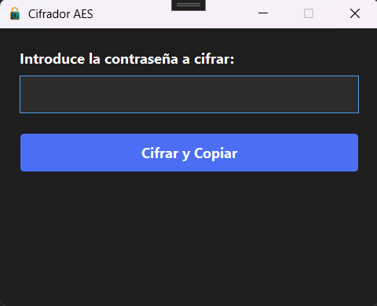
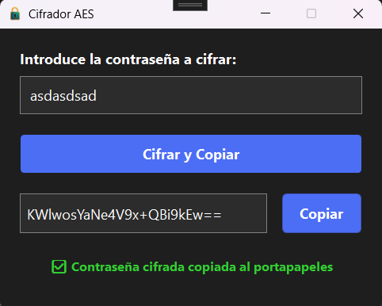

EncryptorACX
Herramienta de escritorio desarrollada durante las prácticas en empresa para cifrar credenciales sensibles mediante el algoritmo AES antes de almacenarlas o transmitirlas en los sistemas internos.
La aplicación cifra el texto introducido y lo copia automáticamente al portapapeles, agilizando el flujo de trabajo del equipo técnico sin necesidad de herramientas externas.
Funcionalidades clave
- Cifrado AES (RijndaelManaged): Modo CBC con padding PKCS7 y feedback de 128 bits.
- Copia automática: El resultado cifrado se copia al portapapeles al pulsar el botón.
- Snackbar animado: Feedback visual con animaciones fade-in/fade-out y auto-ocultado a los 3 segundos.
- Acceso rápido por teclado: Cifrado con Enter sin necesidad de usar el ratón.
- Feedback de error: Mensaje diferenciado en caso de campo vacío o fallo en el cifrado.
Tecnologías usadas
Lenguaje: C#
Framework: .NET, WPF
Criptografía: System.Security.Cryptography (RijndaelManaged / AES)
UI: XAML con estilos personalizados y animaciones con Storyboard
Galería de pantallas


Decisiones técnicas
RijndaelManaged con CBC + PKCS7: Configuración estándar de AES que garantiza compatibilidad con otros sistemas de la empresa que descifran el mismo formato.
Snackbar con DispatcherTimer: En lugar de un MessageBox bloqueante, se implementó un feedback no intrusivo que desaparece automáticamente para no interrumpir el flujo de trabajo.
Resultado visible en pantalla: Además de copiarse al portapapeles, el texto cifrado se muestra en un campo de solo lectura para que el usuario pueda verificarlo antes de usarlo.